Canvas Grades
1 Introduction
This document contains sample code to: connect to Canvas using the rcanvas package (Ranzolin, Hua, and Hathaway 2021), retrieve grade books, wrangle them into shape, and perform some basic exploratory data analysis (EDA) (Tukey 1977).
The rcanvas package provides an R interface retrieve a class list and grade books for individual classes. The code below illustrates one way to establish a safe connection to Canvas, generate a class list, wrangle the data into a useful shape (Wickham 2019), and look at trends in the scores (Wickham et al. 2020; Patil 2021).
2 Load Libraries
# Safely store credentials
library(keyring)
# Read canvas course information
library(rcanvas)
# Data wrangling and formatting
library(tidyverse)
library(kableExtra)
library(knitr)
opts_chunk$set(comment=NA, prompt=FALSE, cache=FALSE, echo=TRUE, results='asis')
# Plotting
library(ggplot2)
library(ggstatsplot)
# stats
library(rstatix)
library(easystats)
library(summarytools)
st_options(bootstrap.css = FALSE, # Already part of the theme so no need for it
plain.ascii = FALSE, # One of the essential settings
style = "rmarkdown", # Idem.
dfSummary.silent = TRUE, # Suppresses messages about temporary files
footnote = NA, # Keeping the results minimalistic
subtitle.emphasis = FALSE) # For the vignette theme, this gives better results.
# For other themes, using TRUE might be preferable.3 Establish Connection to canvas
Connecting to Canvas requires an access token. As described in the rcanvas documentation, to establish an access code, sign into canvas and go to: Canvas -> Account -> Settings -> Approved Integrations -> Add new token
The token is then added as an argument to the set_canvas_token() argument. It is unwise to hard code an API token into the code. One option is to rely on the rstudioapi::askForPassword() function. The function rstudioapi::askForPassword("Canvas API Token") is assigned to a variable and passed to set_canvas_token(). Another option is to use the keyring library, store the credentials, and then call them. Following instructions provided at RStudio, the latter appraoch is employed here.
Connecting to canvas also requires setting the Canvas domain. This is done with the set_canvas_domain() function. With the token and domain set, it is possible to pull up a class list. The full class list table contains way more variables than necessary. Below, the key variables class name and id are selected and output as a table.
# Enter token, set domain, and get class list
canvas_token <- key_get("canvas-token", "nmc")
set_canvas_token(token = canvas_token)
#Set domain
set_canvas_domain("https://nmsu.instructure.com")
# Get course list and eliminate unnecessary columns
get_course_list() %>%
select(id, name)4 Select Class and Get Master Grade Book
For this sample, I’ve chosen “1273540 2020 Spring - ANTH-125G-M02-INTRO WORLD CULTURES.” With the class selected, one can use the get_course_gradebook() function to pull the gradebook for the class. Note that it takes quite some time to pull the master grade book, and at least in my case it contains several hundred columns. Given that it takes so long to pull down the grades, and the table requires a bit of wrangling, I suggest saving the master gradebook to a variable that can be called up without having to reload from the server.
# Loading the grade book is pretty slow.
# Assign grade book to a variable.
gb_all <- get_course_gradebook(1273540)4.1 Remove Unwanted Columns and Inspect Others
At least in my case, the institution has subscribed to Turnitin. The master grade book for recent courses contains over 500 columns, all but about 32 of which are part of Turnitin and not of much interest for EDA of grades. In fact, the first couple of times I looked at the master grade book with all of the columns, I couldn’t find the most important one–the grades for individual assignments. I found that identifying useful columns was much easier once the hundreds of Turnitin columns were removed.
Older classes, before Turnitin was added don’t have as many columns. However, running these lines of code below to strip out Turnitin columns isn’t a problem.
# The raw gp contains many 'turnitin_data' cols,
# remove these to help see cols of interest.
gb <- gb_all %>%
select(-starts_with("turnitin_data"))
# Get list of col names
colnames(gb)[1] “id” “body”
[3] “url” “grade”
[5] “score” “submitted_at”
[7] “assignment_id” “user_id”
[9] “submission_type” “workflow_state”
[11] “grade_matches_current_submission” “graded_at”
[13] “grader_id” “attempt”
[15] “cached_due_date” “excused”
[17] “late_policy_status” “points_deducted”
[19] “grading_period_id” “extra_attempts”
[21] “posted_at” “late”
[23] “missing” “seconds_late”
[25] “entered_grade” “entered_score”
[27] “preview_url” “attachments”
[29] “user.name” “grades.final_score”
[31] “course_id” “assignment_name”
4.2 Create Anon ID and Select Necessary Columns
For purposes of the Family Educational Rights and Privacy Act (FERPA), it is critical to ensure student anonymity. The code below strips white space out of the assignment names and constructs an anonymous ID. Canvas also creates a "test student’ and this individual needs to be removed. Additionally, if students didn’t take a quiz or exam and a 0 was not manually filled in one needs to be added. Lastly, assignment names are turned into a factor.
# Remove whitespace from assignment names
gb$assignment_name <- gsub('\\s+', '', gb$assignment_name)
# Create anonymous ID, select cols of interest, and
# drop na's associated with 'test student'
gb <- gb %>%
mutate(anon_id = str_c(
str_sub(user.name, -3), str_sub(user_id, -3))
) %>%
select(anon_id,
assignment_name,
score,
course_id) %>%
filter(anon_id != 0) %>% # Remove Test Student
mutate_all(~replace(., is.na(.), 0)) %>% # Replace NA with 0
mutate(assignment_name = as_factor(assignment_name))4.3 Filter Syntax for Assignments
The grade book is in “long” rather than “wide” format. If the quizzes and assignments are named properly, it is a simple matter to use a very basic regular expression to filter on the classes of items that are of interest. Such filters can be included in pipelines for various kinds of analyses or or graphing operations.
# Get Exams
gb %>% filter(str_detect(assignment_name, "^Exam"))# Get quizzes
gb %>% filter(str_detect(assignment_name, "^Quiz"))# Get films
gb %>% filter(str_detect(assignment_name, "^Film"))4.4 Get Assignment Counts
Some kinds of analyses require a consistent number of items across various data collection events (Exams, Quizzes, etc). The function below is a really easy way to count the number of items in each instance of a type of assignment. In this case, there are three exams: Exam1, Exam2, and Exam3. Using a regular expression to pull up all exams and summarizing a count shows how many grades are recorded for each exam.
gb %>%
filter(str_detect(assignment_name, "^Exam")) %>%
group_by(assignment_name) %>%
summarize(count=n())4.5 Prepare Data and Create Attendance Score from Daily Attendance Quizzes
I take attendance by using very brief attendance quizzes at the start of class. This automates the process of people marking themselves present. A Cumulative Attendance score can be created by added up the sum of each day’s attendance quiz. In addition to being well suited for regression analysis performed below, having data in a “wide” format is a convienant way to sum across each day’s attendance score to generate a Cumulative Attendance. The tidyverse function pivot_wider() was used for this task. Below the data are pivoted to wide format and the column numbers are retrieved.
gb_wide <- gb %>%
pivot_wider(names_from = assignment_name, values_from = score)
colnames(gb_wide)[1] “anon_id”
[2] “course_id”
[3] “Exam1”
[4] “Exam2”
[5] “Exam3”
[6] “01Jan23Attendance”
[7] “02Jan28Attendance”
[8] “03Jan30Attendance”
[9] “04Feb4Attendance”
[10] “05Feb6Attendance”
[11] “06Feb11Attendance”
[12] “07Feb13Attendance”
[13] “08Feb18Attendance”
[14] “09Feb20Attendance”
[15] “10Feb25Attendance”
[16] “11Feb27Attendance”
[17] “12Mar3Attendance”
[18] “13Mar5Attendance”
[19] “14Mar10Attendance”
[20] “15Mar12Attendance”
[21] “18Mar31Attendance”
[22] “19Apr2Attendance”
[23] “20Apr7Attendance”
[24] “21Apr9Attendance”
[25] “22Apr14Attendance”
[26] “23Apr16Attendance”
[27] “24Apr21Attendance”
[28] “25Apr23Attendance”
[29] “26Apr28Attendance”
[30] “27Apr30Attendance”
[31] “28May5Attendance”
[32] “29May7Attendance”
[33] “30May12Attendance”
[34] “Film1Activity:MotherTongues”
[35] “Film2Activity:TheHunters”
[36] “Film3Activity:TheAxFight”
[37] “FilmActivity4:FirstContact”
[38] “FilmActivity5:AdvertisingMissionaries” [39] “Quiz1”
[40] “Quiz2”
[41] “Quiz3”
[42] “Quiz4”
[43] “Quiz5”
Once pivoted wide, using index location determined above, a sum is calculated across all of the Attendance Quiz columns and then each of the individual quizzes are dropped. Now the data are in wide format with each exam in its own column along with a Cumulative Attendance score.
gb_wide <-gb_wide %>%
mutate(attendance = select(.,7:34) %>%
rowSums(),
.after = course_id) %>%
select(.,-(7:34))5 Summary Values
Pulling up the summary values is a good place to start.
gb_wide %>%
select(attendance, Exam1, Exam2, Exam3) %>%
descr()5.0.1 Descriptive Statistics
gb_wide
N: 43
| attendance | Exam1 | Exam2 | Exam3 | |
|---|---|---|---|---|
| Mean | 79.28 | 110.02 | 114.21 | 108.84 |
| Std.Dev | 14.65 | 16.40 | 30.53 | 29.49 |
| Min | 26.00 | 69.00 | 0.00 | 0.00 |
| Q1 | 75.00 | 99.00 | 108.00 | 102.00 |
| Median | 84.00 | 111.00 | 120.00 | 114.00 |
| Q3 | 89.00 | 120.00 | 129.00 | 126.00 |
| Max | 92.00 | 144.00 | 147.00 | 144.00 |
| MAD | 8.90 | 13.34 | 13.34 | 17.79 |
| IQR | 13.50 | 19.50 | 19.50 | 22.50 |
| CV | 0.18 | 0.15 | 0.27 | 0.27 |
| Skewness | -1.94 | -0.36 | -2.54 | -2.37 |
| SE.Skewness | 0.36 | 0.36 | 0.36 | 0.36 |
| Kurtosis | 3.68 | 0.02 | 6.75 | 6.13 |
| N.Valid | 43.00 | 43.00 | 43.00 | 43.00 |
| Pct.Valid | 100.00 | 100.00 | 100.00 | 100.00 |
6 Graph Results and Identify Outliers
The library ggstatsplot provides a covenant way to report histograms, central tendency, and density curves. Here, ggstatsplot::gghistostats is used to create annotated histograms of the course exams. The rstatix::identify_outliers() function allows easy flagging of outlying scores on each of the exams.
6.1 Exam 1
#Exam 1
gb %>%
filter(., assignment_name == "Exam1") %>%
gghistostats(data = .,
x = score,
normal.curve = TRUE,
normal.curve.args = list(color = "red", size = 1),
ggtheme = ggthemes::theme_tufte(),
title = "Exam 1 Scores"
)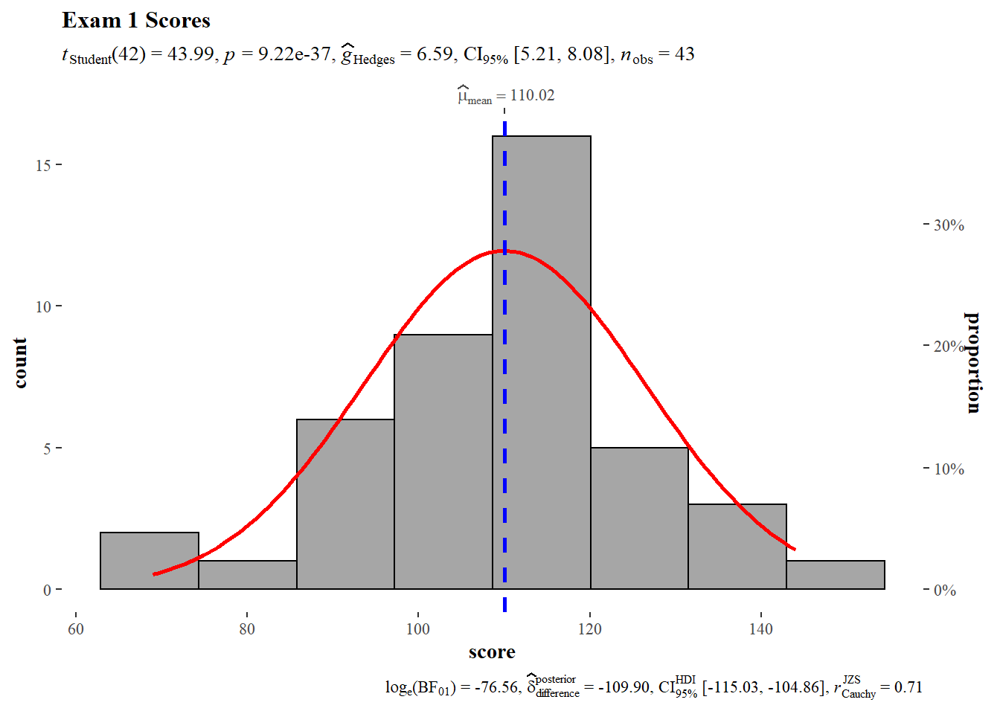
gb %>%
filter(assignment_name=="Exam1") %>%
shapiro_test(score)gb %>%
filter(assignment_name=="Exam1") %>%
ggplot(.,aes(sample = score))+
stat_qq()+
stat_qq_line()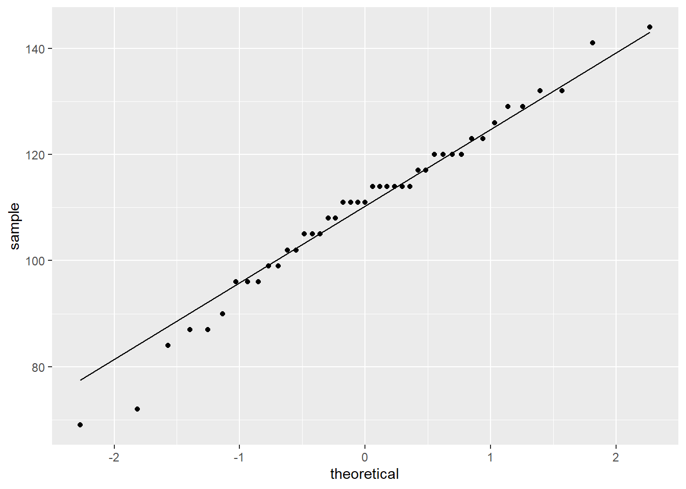
gb %>%
filter(assignment_name=="Exam1") %>%
identify_outliers(score)6.2 Exam 2
# Exam 2
gb %>%
filter(., assignment_name == "Exam2") %>%
gghistostats(data = .,
x = score,
normal.curve = TRUE,
normal.curve.args = list(color = "red", size = 1),
ggtheme = ggthemes::theme_tufte(),
title = "Exam 2 Scores"
)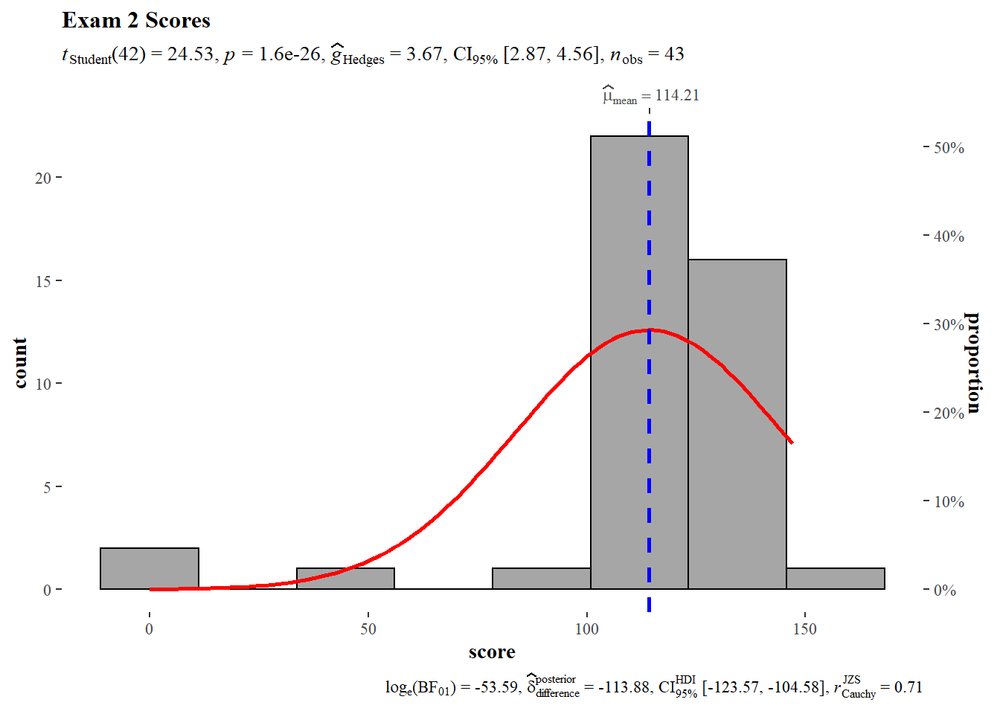
gb %>%
filter(assignment_name=="Exam2") %>%
shapiro_test(score)gb %>%
filter(assignment_name=="Exam2") %>%
ggplot(.,aes(sample = score))+
stat_qq()+
stat_qq_line()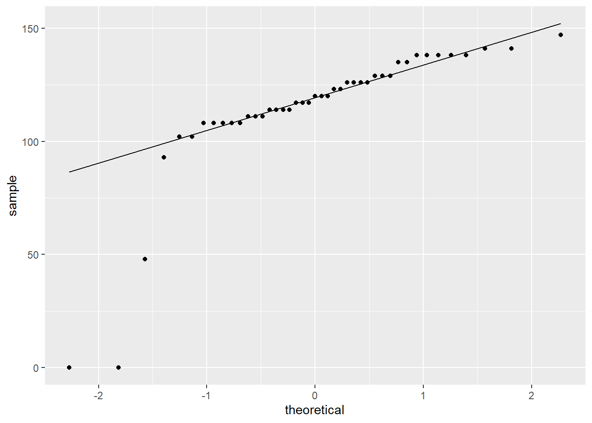
gb %>%
filter(assignment_name=="Exam2") %>%
identify_outliers(score)6.3 Exam 3
# Exam 3
gb %>%
filter(., assignment_name == "Exam3") %>%
gghistostats(data = .,
x = score,
normal.curve = TRUE,
normal.curve.args = list(color = "red", size = 1),
ggtheme = ggthemes::theme_tufte(),
title = "Exam 3 Scores"
)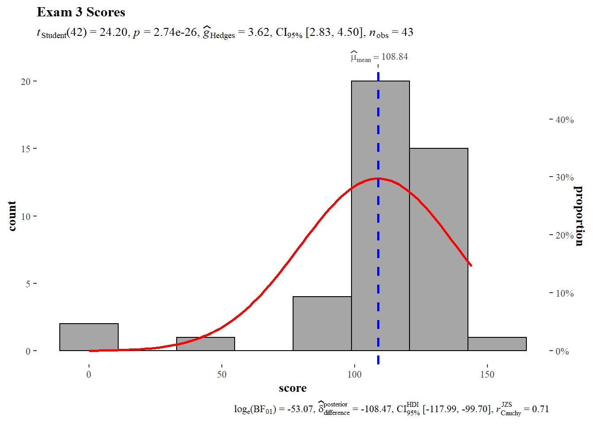
gb %>%
filter(assignment_name=="Exam3") %>%
shapiro_test(score)gb %>%
filter(assignment_name=="Exam3") %>%
ggplot(.,aes(sample = score))+
stat_qq()+
stat_qq_line()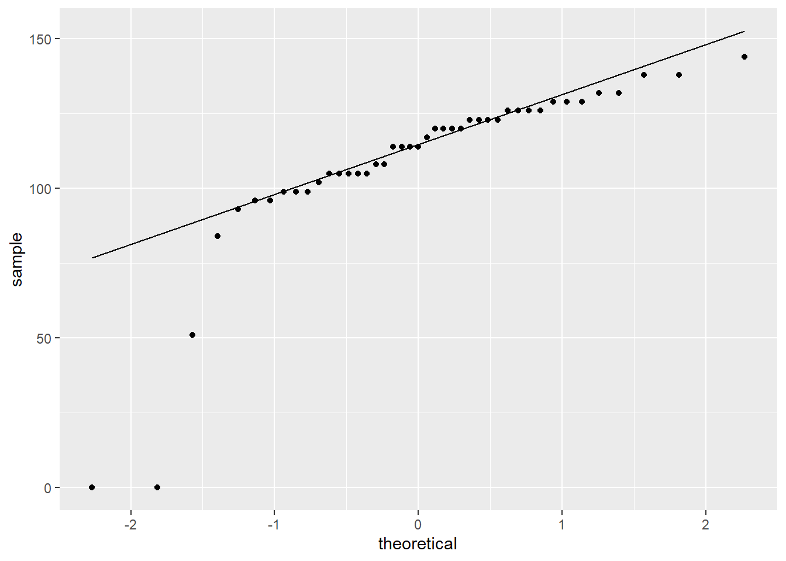
gb %>%
filter(assignment_name=="Exam3") %>%
identify_outliers(score)6.4 Attendance
# Attendance
gb_wide %>%
gghistostats(data = .,
x = attendance,
normal.curve = TRUE,
normal.curve.args = list(color = "red", size = 1),
ggtheme = ggthemes::theme_tufte(),
title = "Cumulative Attendance Scores"
)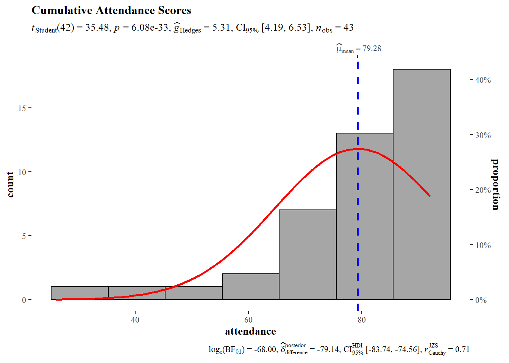
gb_wide %>%
shapiro_test(attendance)gb_wide %>%
ggplot(.,aes(sample = attendance))+
stat_qq()+
stat_qq_line()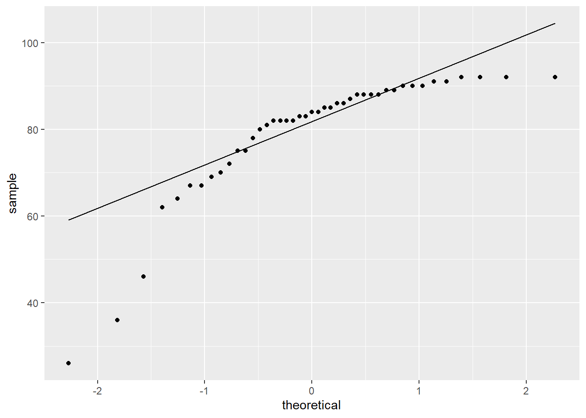
gb_wide %>%
select(anon_id, attendance) %>%
identify_outliers(attendance)Exam 1 has a single outlier while Exams 2 and 3 had three outliers each. Notably, two individuals show up as outliers on both Exams 2 and 3. These might be useful to consider in terms of attendance later on.
6.5 Compare Exam Scores
The ggstatsplot library also provides a function ggwithinstats() to compare distributions and central tendencies of the three exams. This shows that there are no signficant differences in the means of the three exams.
gb %>%
filter(str_detect(assignment_name, "^Exam")) %>%
group_by(assignment_name) %>%
ggstatsplot::ggwithinstats(data = .,
x = assignment_name,
y = score
)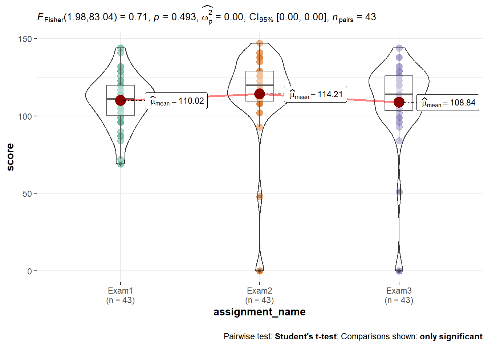
7 Regression
It would be useful to know if attendance predicts exam performance or if performance on one exam predicts performance on another. Linear regression provides a simple way to examine such relationships.
# gb_wide <- gb %>%
# filter(str_detect(assignment_name, "^Exam")) %>%
# pivot_wider(names_from = assignment_name, values_from = score)7.1 Is Attendance a Predictor of Exam Performance?
At least in this class, Cumulative Attendance explained a statistically not significant and weak proportion of the variance in Exam 1 (\(R^2 = 1.05e-03, F(1, 41) = 0.04, p = 0.837, adj. R^2 = -0.02\)). For Exam 1, attendance was not significant and positive (\(b = 0.04, t(41) = 0.21, p = 0.837\)).
lm(Exam1~attendance, data = gb_wide) %>%
report()We fitted a linear model (estimated using OLS) to predict Exam1 with attendance (formula: Exam1 ~ attendance). The model explains a statistically not significant and very weak proportion of variance (R2 = 1.05e-03, F(1, 41) = 0.04, p = 0.837, adj. R2 = -0.02). The model’s intercept, corresponding to attendance = 0, is at 107.15 (95% CI [78.71, 135.59], t(41) = 7.61, p < .001). Within this model:
- The effect of attendance is statistically non-significant and positive (beta = 0.04, 95% CI [-0.32, 0.39], t(41) = 0.21, p = 0.837; Std. beta = 0.03, 95% CI [-0.28, 0.35])
Standardized parameters were obtained by fitting the model on a standardized version of the dataset.
gb_wide %>%
ggplot(., aes(attendance, Exam1))+
geom_point()+
geom_smooth(method = "lm")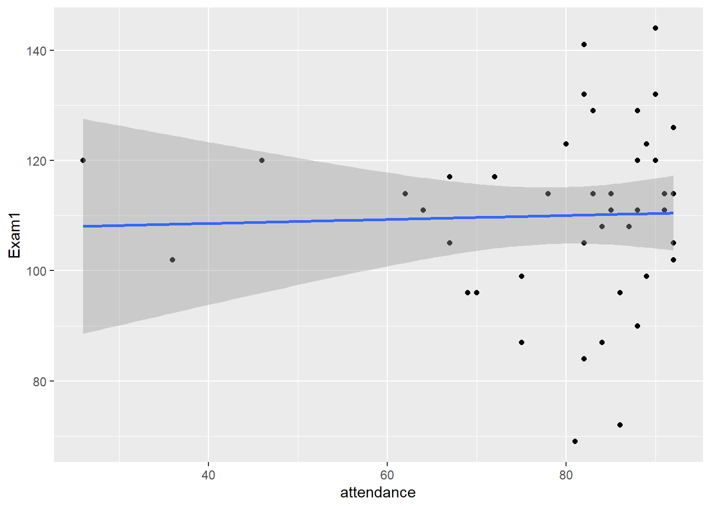
Cumulative Attendance explained a statistically not significant and weak proportion of the variance in Exam 2 (\(R^2 = 0.08, F(1, 41) = 3.41, p = 0.072, adj. R^2 = 0.05\)). The effect of Cumulative Attendance is statistically non-significant and positive (\(b = 0.58, t(41) = 1.85, p = 0.072\)).
lm(Exam2~attendance, data = gb_wide) %>%
report()We fitted a linear model (estimated using OLS) to predict Exam2 with attendance (formula: Exam2 ~ attendance). The model explains a statistically not significant and weak proportion of variance (R2 = 0.08, F(1, 41) = 3.41, p = 0.072, adj. R2 = 0.05). The model’s intercept, corresponding to attendance = 0, is at 68.41 (95% CI [17.53, 119.30], t(41) = 2.72, p < .01). Within this model:
- The effect of attendance is statistically non-significant and positive (beta = 0.58, 95% CI [-0.05, 1.21], t(41) = 1.85, p = 0.072; Std. beta = 0.28, 95% CI [-0.03, 0.58])
Standardized parameters were obtained by fitting the model on a standardized version of the dataset.
gb_wide %>%
ggplot(., aes(attendance, Exam2))+
geom_point()+
geom_smooth(method = "lm")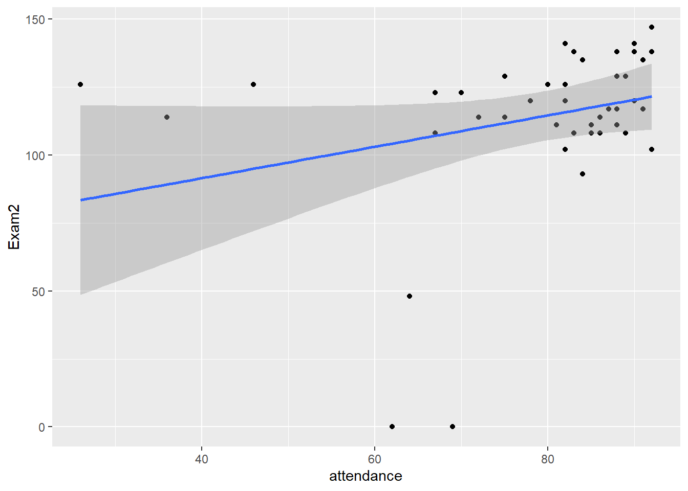
Cumulative Attendance explained a statistically significant and substantial proportion of the variance in Exam 3 (\(R^2 = 0.36, F(1, 41) = 23.00, p < .001, adj. R^2 = 0.34\)). The effect of Cumulative Attendance is statistically significant and positive (\(b = 1.21, t(41) = 4.80, p < .001\)).
lm(Exam3~attendance, data = gb_wide) %>%
report()We fitted a linear model (estimated using OLS) to predict Exam3 with attendance (formula: Exam3 ~ attendance). The model explains a statistically significant and substantial proportion of variance (R2 = 0.36, F(1, 41) = 23.00, p < .001, adj. R2 = 0.34). The model’s intercept, corresponding to attendance = 0, is at 13.18 (95% CI [-27.77, 54.12], t(41) = 0.65, p = 0.519). Within this model:
- The effect of attendance is statistically significant and positive (beta = 1.21, 95% CI [0.70, 1.71], t(41) = 4.80, p < .001; Std. beta = 0.60, 95% CI [0.35, 0.85])
Standardized parameters were obtained by fitting the model on a standardized version of the dataset.
gb_wide %>%
ggplot(., aes(attendance, Exam3))+
geom_point()+
geom_smooth(method = "lm")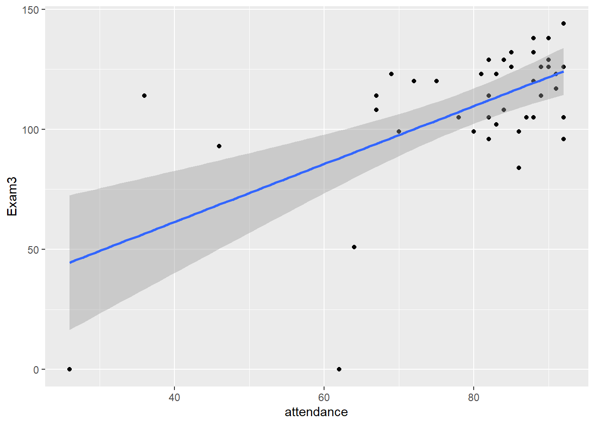
The effect of Cumulative Attendance increased with each exam and was significant on the final.
7.2 Does Performance on One Exam Predict Performance on Another?
Exam 1 explains a statistically significant and weak proportion of the variance (\(R^2 = 0.09, F(1, 41) = 4.12, p = 0.049, adj. R^2 = 0.07\)). The effect of Exam 1 on Exam 2 is statistically significant and positive (\(b = 0.56, 95% CI [2.76e-03, 1.12], t(41) = 2.03, p < .05\)).
lm(Exam2~Exam1, data = gb_wide) %>%
report()We fitted a linear model (estimated using OLS) to predict Exam2 with Exam1 (formula: Exam2 ~ Exam1). The model explains a statistically significant and weak proportion of variance (R2 = 0.09, F(1, 41) = 4.12, p = 0.049, adj. R2 = 0.07). The model’s intercept, corresponding to Exam1 = 0, is at 52.34 (95% CI [-9.89, 114.57], t(41) = 1.70, p = 0.097). Within this model:
- The effect of Exam1 is statistically significant and positive (beta = 0.56, 95% CI [2.76e-03, 1.12], t(41) = 2.03, p < .05; Std. beta = 0.30, 95% CI [1.48e-03, 0.60])
Standardized parameters were obtained by fitting the model on a standardized version of the dataset.
gb_wide %>%
ggplot(., aes(Exam1, Exam2))+
geom_point(aes(color = attendance))+
geom_smooth(method = "lm")+
scale_color_gradient(low="red", high="green")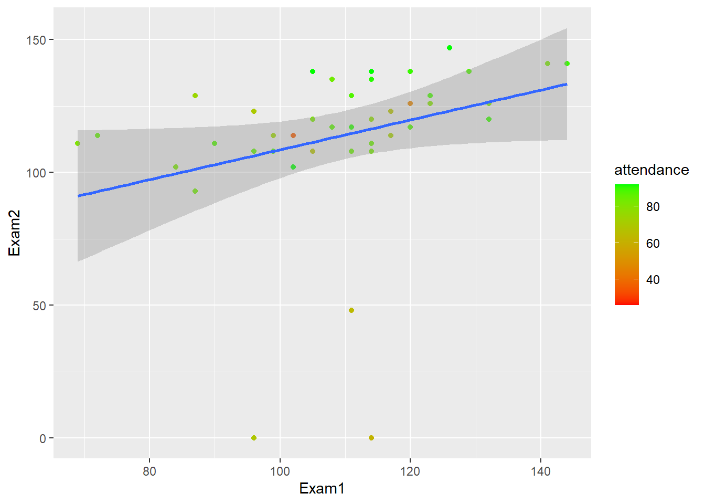
One can use ggstatsplot::ggwithinstats() to see how individual performance changed between Exams 1 and 2. In this case, one can see that the spread of Exam 2 is much wider. This is largely because three individuals who scored below the mean on Exam 1 either got zeros on Exam 2 or generally scored lower than the group as a whole.
gb %>%
filter(assignment_name == "Exam1" | assignment_name == "Exam2") %>%
ggstatsplot::ggwithinstats(data = .,
x = assignment_name,
y = score
)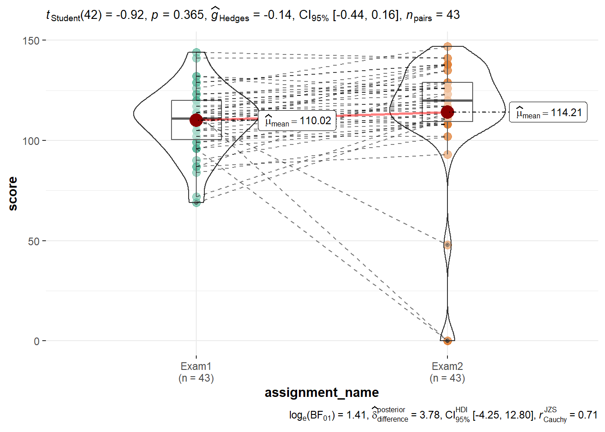
Exam 2 explains a statistically significant and moderate proportion of the variance (\(R^2 = 0.24, F(1, 41) = 12.60, p < .001, adj. R^2 = 0.22\)). The effect of Exam 2 on Exam 3 performance is statistically significant and positive (\(b = 0.47, 95% CI [0.20, 0.73], t(41) = 3.55, p < .001\)).
lm(Exam3~Exam2, data = gb_wide) %>%
report()We fitted a linear model (estimated using OLS) to predict Exam3 with Exam2 (formula: Exam3 ~ Exam2). The model explains a statistically significant and moderate proportion of variance (R2 = 0.24, F(1, 41) = 12.60, p < .001, adj. R2 = 0.22). The model’s intercept, corresponding to Exam2 = 0, is at 55.34 (95% CI [23.86, 86.81], t(41) = 3.55, p < .001). Within this model:
- The effect of Exam2 is statistically significant and positive (beta = 0.47, 95% CI [0.20, 0.73], t(41) = 3.55, p < .001; Std. beta = 0.48, 95% CI [0.21, 0.76])
Standardized parameters were obtained by fitting the model on a standardized version of the dataset.
gb_wide %>%
ggplot(., aes(Exam2, Exam3))+
geom_point(aes(color = attendance))+
geom_smooth(method = "lm")+
scale_color_gradient(low="red", high="green")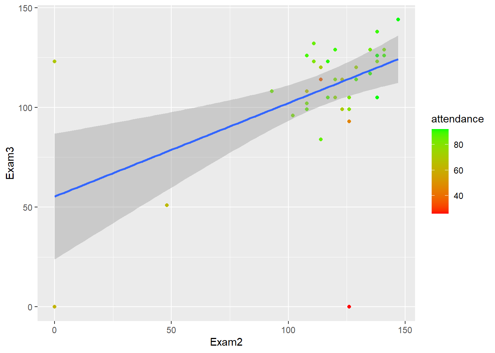
The ggstatsplot::ggwithinstats() violin-box plot shows that Exams 2 and 3 have very similar distributions. This is because in each case there is an individual who scored a zero and one additional individual is scoring lower than the group as a whole.
gb %>%
filter(assignment_name == "Exam2" | assignment_name == "Exam3") %>%
ggstatsplot::ggwithinstats(data = .,
x = assignment_name,
y = score
)
Together Exams 1 and 2 explain a statistically significant and moderate proportion of the variance in Exam 3 (\(R^2 = 0.24, F(2, 40) = 6.35, p = 0.004, adj. R^2 = 0.20\)). The effect of Exam 1 is statistically non-significant and negative (\(b = -0.14, 95% CI [-0.67, 0.38], t(40) = -0.55, p = 0.584\)), and the effect of Exam 2 is statistically significant and positive (\(b = 0.49, 95% CI [0.21, 0.77], t(40) = 3.52, p < .01; Std. beta = 0.51\)).
lm(Exam3~Exam1+Exam2, data = gb_wide) %>%
report()We fitted a linear model (estimated using OLS) to predict Exam3 with Exam1 and Exam2 (formula: Exam3 ~ Exam1 + Exam2). The model explains a statistically significant and moderate proportion of variance (R2 = 0.24, F(2, 40) = 6.35, p = 0.004, adj. R2 = 0.20). The model’s intercept, corresponding to Exam1 = 0 and Exam2 = 0, is at 68.47 (95% CI [10.87, 126.07], t(40) = 2.40, p < .05). Within this model:
- The effect of Exam1 is statistically non-significant and negative (beta = -0.14, 95% CI [-0.67, 0.38], t(40) = -0.55, p = 0.584; Std. beta = -0.08, 95% CI [-0.37, 0.21])
- The effect of Exam2 is statistically significant and positive (beta = 0.49, 95% CI [0.21, 0.77], t(40) = 3.52, p < .01; Std. beta = 0.51, 95% CI [0.22, 0.80])
Standardized parameters were obtained by fitting the model on a standardized version of the dataset.
8 Other Analyses
8.1 T-tests
One sample t-tests can be run to compare with a hypothetical mean.
t_test(gb_wide, Exam1 ~ 1, mu=0)t_test(gb_wide, Exam2 ~ 1, mu=0)